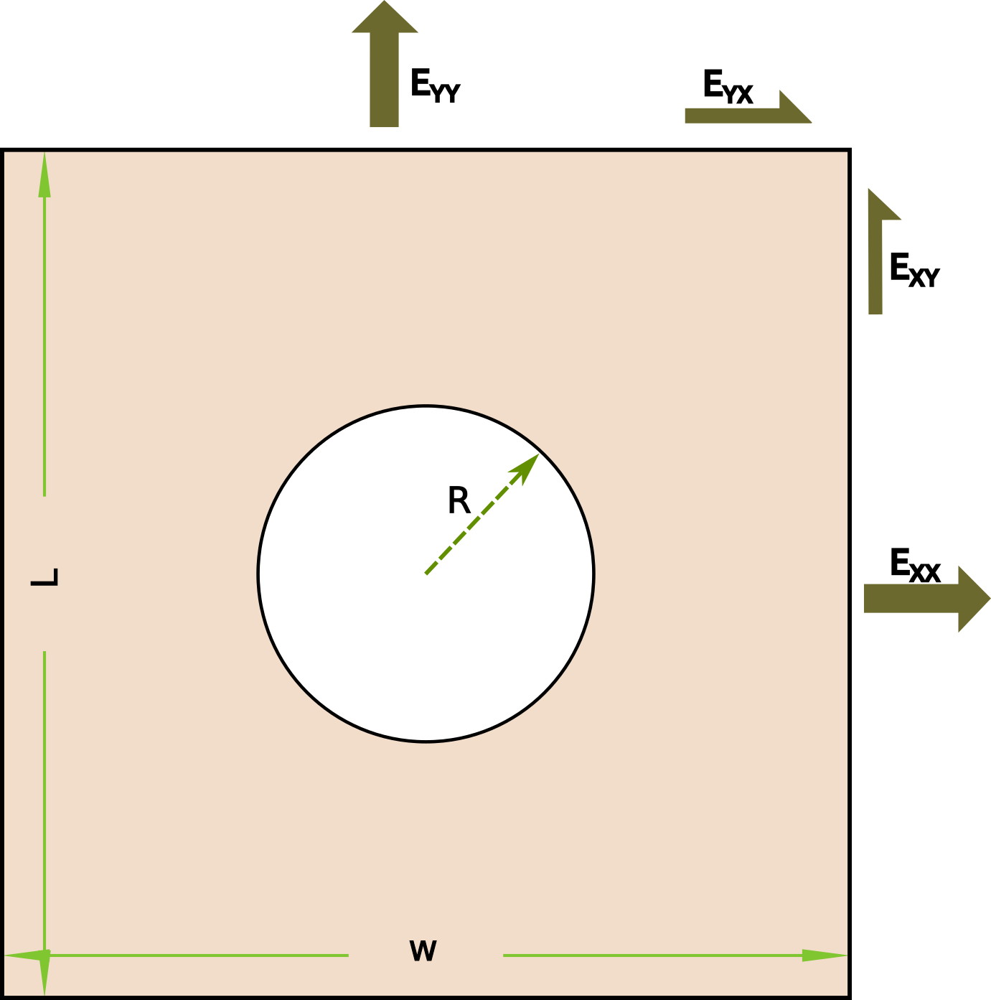

hollow_plate_sve¶
1. problem description¶
In this part, we are trying to show how the developed RVE simulator works by a simple RVE case called hollow plate RVE. The schematic of the RVE is given by:
{kind=link}
Geometry parameters to describe the RVE
length: \(L\), width: \(W\). Usually, \(L=W\); therefore, we only use one parameter (size) to define the shape of RVE
radius: \(R\), which is the radius of the plate inside the square
Other parameters for simulation
- Material parameters:
Young’s modulus, the default value is \(100 \mathrm{Mpa}\)
Poission ratio , the default value is \(0.3\)
- Loading:
\([ E_{xx}, E_{yy}, E_{xy} ]\)
- Mesh:
mesh portion: divisions of every edges when meshing
2. Implementation¶
The implementation of the RVE simulator is based on the following steps:
# import the function
from rvesimulator.benchmarks.hollow_plate_sve import ElasticRegularLoads
# create the problem
problem = ElasticRegularLoads()
# set the parameters
problem.update_sim_info(print_info=True)
>>> # default simulation information
{
"job_name": "hollow_plate",
"radius": 0.2,
"size": 1.0,
"youngs_modulus": 100.0,
"poisson_ratio": 0.3,
"mesh_partition": 30,
"strain": [
0.05,
0.05,
0.05
],
"num_cpu": 1,
"platform": "ubuntu"
}
# run the simulation by changing the parameters
samples = {"radius":0.15, "size":1.0}
results = problem.run_simulation(samples, folder_index=0)
print(results.keys())
>>>
dict_keys(['total_time', 'stress', 'plastic_energy', 'deformation_gradient', 'strain', 'total_volume'])
Note
This example gives you an intuition on how the rvesimulator works by integrating all the modulus, rvesimulator.abaqus2py,
rvesimulator.microstructure, and some default made abaqus scripts which is in the scriptbase folder.
2. Other cases based on the same microstructure¶
As we know the, we can change the material properties and loading conditions to create other RVE simulations. Here more examples are given based on the same hollow plate microstructure:
RVE benchmarks |
API of the benchmarks |
|---|---|
VonMisesPlasticRegularLoads |
|
ElasticRegularLoads |
|
VonMisesPlasticPathLoads |
|